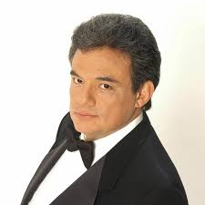

Galería
.jpg)
.jpg)

José Rómulo Sosa Ortiz, conocido por su nombre artístico como José José, nació en la Ciudad de México el 17 de febrero de 1948.
También conocido como "El Príncipe de la Canción", fue uno de los artistas latinos que más éxito tuvo durante las décadas de 1970 y 1980, muy reconocido en toda la región por su extraordinaria voz y por su interpretación de la balada romántica.
Durante sus 53 años de carrera musical, vendió más de 250 millones de copias y recibió algunos de los reconocimientos discográficos más importantes. Durante nueve años consecutivos fue nominado para el premio Grammy, en la categoría de "Mejor Artista Latino" y la revista Billboard le otorgó dos premios por su trayectoria artística.
Aparte de su carrera artística, el artista trabajó a favor de los más desfavorecidos. Grabó el disco en español de "Hermanos del Tercer Mundo" (We are the World), junto con famosos artistas como Celia Cruz y Julio Iglesias, a beneficio de la comunidad africana.
Además, ofreció conciertos benéficos para las organizaciones: World Vision, la Liga contra el Cáncer y la Asociación Pro-Paralítica Cerebral (APAC). También brindó su apoyo a las víctimas del Huracán Andrés y los afectados por el terremoto de 1985 en México. Igualmente, ofreció un concierto para la construcción en México del Hospital para Pacientes con Problemas de Alcoholismo y Drogadicción, una enfermedad de la que él mismo ha sido víctima.
Por su activa labor humanitaria y filantrópica, el cantante fue merecedor de numerosos reconocimientos a lo largo de su carrera profesional.
En 4 de diciembre de 2008 la Organización Panamericana de la Salud (OPS) lo reconoció con el premio Campeón de la Salud por compartir su experiencia de vida y manifestarse contra la violencia hacia la mujer. Durante el acto de entrega del reconocimiento en la ciudad de Washington, José José destacó el valor de la mujer en la sociedad y exhortó el género masculino a respetarla.
El famoso baladista mexicano relató su historia como hijo de un alcohólico que agredía a su esposa y que murió a los 45 años. El cantante describió sus propias luchas con el alcoholismo y las dificultades para superar la violencia contra las mujeres en una cultura que tradicionalmente ha glorificado el machismo y despreciado el concepto de igualdad de género.
El 28 de septiembre de 2019, José José, el legendario cantante mexicano falleció en la ciudad de Miami, Florida a la edad de 71 años.
Descubre algunos datos fascinantes sobre la vida y la obra de José José que tal vez no conocías.
1. Aunque no hablaba inglés, podía cantarlo perfectamente José José nunca pudo dominar el idioma universal, sin embargo, lo cantaba a la perfección; tan es así, que en una fiesta en Los Ángeles cantó el tema “Misty”, de Erroll Garner, y fue ovacionado.
2. Ha sido el intérprete mexicano más exitoso Su disco Secretos ha sido el mayor éxito en su carrera, con 11 millones de copias vendidas y fue el primer lugar en la lista del Billboard por más de 40 semanas seguidas en países de Latinoamérica y EU.
3. Nunca tuvo una formación musical pero él simplemente salió cantante Nunca llevó una formación musical, pero llegó a confesar que supo que podía ser cantante cuando imitando a Frank Sinatra descubrió que podía igualar su registro vocal. Por lo que puede decirse que él era un cantante nato.
4. Era de gustos muy finos En su mejor época, tomaba champaña Crystal y coñac Martell, y en las comidas sólo bebía vino tinto o blanco.
5. Frank Sinatra lo buscó para que cantara con él José era un gran fan del intérprete estadounidense, pero cuando éste lo buscó para hacer una canción juntos, su disquera no lo dejó.